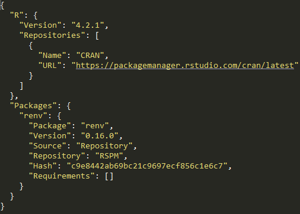

Bonnes pratiques pour les projets statistiques
Une formation aux bonnes pratiques avec Git et R
Introduction
La notion de bonnes pratiques
- Origine : communauté des développeurs logiciels
- Constats :
- le “code est plus souvent lu qu’écrit” (Guido Van Rossum)
- la maintenance d’un code est très coûteuse
- Conséquence : un ensemble de règles informelles, conventionnellement acceptées comme produisant des logiciels fiables, évolutifs et maintenables
Pourquoi s’intéresser aux bonnes pratiques ?
L’activité du statisticien / datascientist tend à se rapprocher de celle du développeur :
- projets intenses en code
- projets collaboratifs et de grande envergure
- complexification des données et donc des infrastructures
- déploiement d’applications pour valoriser les analyses
Bonnes pratiques et reproductibilité

Source : Peng R., Reproducible Research in Computational Science, Science (2011)
- Une reproductibilité parfaite est coûteuse
Gitest un standard atteignable et efficient
Quel socle de bonnes pratiques pour les projets statistiques en R ?
Partie 1 : contrôle de version avec Git
Plan de la formation
1️⃣ Le contrôle de version : pourquoi faire ?
2️⃣ Le contrôle de version avec Git
3️⃣ Le travail collaboratif avec Git
I- Le contrôle de version : pourquoi faire ?
1️⃣ Archiver son code proprement
pour en finir avec ça :

1️⃣ Archiver son code proprement
ou ça :

1️⃣ Archiver son code proprement
ou encore ça :
prior <- read_csv(prior_path)
prior <- prior %>%
select(id, proba_inter, proba_build, proba_rfl) %>%
separate(id, into = c('nidt', 'grid_id'), sep = ":") %>%
group_by(nidt) %>%
mutate(
proba_build = proba_build/sum(proba_build),
proba_rfl = proba_rfl/sum(proba_rfl),
) %>%
unite(col = "id", nidt, grid_id, sep = ":")
# Test
# prior_test <- prior %>%
# mutate(
# proba_inter = round(proba_inter, 4)
# proba_build = round(proba_build, 4)
# proba_rfl = round(proba_rfl, 4)
# )
write_csv(prior_round, "~/prior.csv")1️⃣ Archiver son code proprement
Pour arriver à ça :

Source : ThinkR
2️⃣ Voyager dans le temps (de votre projet)

3️⃣ Une collaboration simplifiée et efficace
Un modèle distribué

Source : specbee.com
3️⃣ Une collaboration simplifiée et efficace
Qui permet l’expérimentation en toute sécurité

Source : lutece.paris.fr
3️⃣ Une collaboration simplifiée et efficace
Quel que soit l’environnement de travail

3️⃣ Une collaboration simplifiée et efficace
Avec des outils pour faciliter la collaboration

4️⃣ Partager son code à un public large
Une vitrine pour les projets et l’organisation

En résumé
- Construire et naviguer à travers l’historique de son projet
- La collaboration rendue simple et efficace
- Améliorer la reproductibilité de ses projets
- Améliorer la visibilité de ses projets
II- Le contrôle de version avec Git
⚠️ Git est complexe
L’utilisation de Git nécessite certaines notions préalables:
- Fonctionnement d’un
filesystem - Connaissance basique du terminal
Linux - Potentiellement, un grand nombre de commandes

⚠️ Git est complexe
Mais
- L’usage quotidien n’implique que quelques commandes
- Enormément de ressources disponibles sur internet
- Des interfaces visuelles (ex:
RStudio,Sublime Merge,VS Code) qui facilitent l’apprentissage - Un petit investissement individuel pour de gros gains collectifs
Concepts
Git, GitHub, GitLab… quelles différences ?
Gitest un logiciel ;- Utilisation en ligne de commandes
- Différentes interfaces graphiques (
RStudio,VS Code…)
Concepts
Git, GitHub, GitLab… quelles différences ?
GitHubetGitLabsont des forges logicielles- Forge: espace d’archivage de code
- Des fonctionalités supplémentaires : réseau social du code
GitHub: utilisation pour les projets open-sourceGitLab: utilisation pour les projets internes
Concepts
Dépôt local / dépôt distant (remote)

- Par défaut, le dépôt distant porte l’alias
origin
Concepts
Workflow local

Source : Git Documentation
Concepts
Workflow complet

Commandes essentielles
| Action | Commande |
|---|---|
| Cloner un projet | git clone [url-to-git-repo] |
| Afficher les changements | git status |
| Retrouver l’URL du dépôt distant | git remote -v |
Commandes essentielles
| Action | Commande |
|---|---|
Ajouter des changements à l’index de Git |
Un seul fichier : git add <file-name> Tous les fichiers déjà indexés : git add -u Tous les fichiers ⚠️ : git add -A |
La méthode git add -A peut amener à suivre les modifications de fichiers qui ne devraient pas l’être (par exemple, des données).
Il est recommandé de bien réfléchir avant de l’utiliser (ou d’avoir un bon .gitignore)
Commandes essentielles
| Action | Commande |
|---|---|
Faire un commit |
git commit -m "message" |
Pousser les changements locaux (branche master) |
git push origin master |
Récupérer les changements distants (branche master) |
git pull origin master |
Modes d’authentification
- https
git clone https://github.com/username/projet.git- simple à utiliser
- authentification username/token à chaque push
- ssh
git clone git@github.com:username/projet.git- (plus) complexe à initialiser
- authentification automatique
Application 0
❓ Question : qu’est ce qui différencie le projet cloné d’un projet quelconque ?
Application 1
❓ Question : à ce stade, le dépôt du projet sur GitHub (remote) a-t-il été modifié ?
Application 2
Bonnes pratiques
Que versionne-t-on ?
- Essentiellement du code source
- Pas d’outputs (fichiers
.html,.pdf, modèles…) - Pas de données, d’informations locales ou sensibles
Pour définir des règles qui évitent de committer tel ou tel fichier, on utilise un fichier nommé .gitignore.
Si on mélange du code et des éléments annexes (output, données…) dans un même dossier, il faut consacrer du temps à ce fichier.
Le site gitignore.io peut vous fournir des modèles.
N’hésitez pas à y ajouter des règles conservatrices (par exemple *.csv), comme cela est expliqué dans la documentation utilitR.
Bonnes pratiques
Format des commits
- Fréquence
- Aussi souvent que possible
- Le lot de modifications doit “faire sens”
- Messages
- Courts et informatifs (comme un titre de mail)
- Décrire le pourquoi plutôt que le comment dans le texte

Application 3
❓ Question : que se passe-t-il lorsque l’on ajoute au .gitignore des fichiers qui ont déjà été commit sur le projet Git ?
III- Le travail collaboratif avec Git
Outils pour le travail collaboratif
- L’éco-système
Gitfacilite le travail collaboratifGit: modèle des branchesGitHub/GitLab: Issues, Pull Requests, Forks
- Ces outils ne remplacent pas une bonne définition de l’organisation du travail en équipe
- Choix d’un workflow
- Droits d’accès
- Règles de contribution
Application 4
❓ Question : que se serait-il passé si les différents membres du groupe avaient effectué leurs modifications sur un seul et même fichier ?
Application 5
❓ Question : comment limiter au maximum la survenue des conflits d’historique ?
Le modèle des branches

Le modèle des branches
Exemple d’organisation : le GitHub flow

Description plus détaillée : ici
Application 6
❓ Question : quelle organisation pour merge dans la branche principale ?
Application 7
Application 8 (bonus)
❓ Question : pourquoi, avec un fork, est-il très important de toujours effectuer une Pull Request à partir d’une branche différente de la branche principale ?
Ressources supplémentaires
- Pour aller plus loin:
- Formation Travail collaboratif avec
R - Cours Reproductibilité et bonnes pratiques pour les projets de data science de l’
ENSAE - La documentation
utilitRpropose plusieurs chapitres surGit - La Bible
- Formation Travail collaboratif avec
- Trouver de l’aide:
- Pour toute question : le salon Tchap Insee-Git-Gitlab
- A l’Insee : la [documentation utilisateurs] pour l’utilisation de
GitsurAUS - Sollicitez vos collègues utilisateurs de
Git!
Partie 2 : bonnes pratiques avec R
Plan de la partie
Améliorations graduelles dans l’échelle de la reproductibilité :
1️⃣ Qualité du code
2️⃣ Structure des projets
3️⃣ Formats de données
4️⃣ Environnements reproductibles
5️⃣ Pipelines de données
6️⃣ Publication reproductible
Application 0
I- Qualité du code
Enjeux
- D’une vision utilitariste du code à une vision du code comme outil de communication
- Favoriser la lisibilité et la maintenabilité
- Faciliter la réutilisation
- Assurer la transparence méthodologique
Principes généraux
- Adopter les standards communautaires
- Utiliser des fonctions
- Documenter son code
- Indiquer les packages utilisés afin d’éviter les conflits
1️⃣ Adopter les standards communautaires
“Good coding style is like correct punctuation: you can manage without it, butitsuremakesthingseasiertoread”
- Respecter les conventions du langage dans lequel il est rédigé
- Il existe un guide de référence pour bien coder en
R: le Tidyverse style guide.
1️⃣ Adopter les standards communautaires
Deux outils pratiques aident à respecter les standards :
- linter : programme qui vérifie que le code est formellement conforme à un certain guidestyle
- signale problèmes formels, sans corriger
- formatter : programme qui reformate un code pour le rendre conforme à un certain guidestyle
- modifie directement le code
- Exemples d’erreurs repérées par un linter :
- lignes de code trop longues ou mal indentées, parenthèses non équilibrées, noms de fonctions mal construits…
- Exemples d’erreurs non repérées par un linter :
- fonctions mal utilisées, arguments mal spécifiés, structure du code incohérente, code insuffisamment documenté…
1️⃣ Adopter les standards communautaires
Dans le cas de :
2️⃣ Utiliser des fonctions
Il faut utiliser une fonction dès qu’on utilise une même portion de code plus de deux fois (don’t repeat yourself (DRY))
- Limite les risques d’erreurs liés aux copier/coller
- Rend le code plus lisible et plus compact
- Un seul endroit du code à modifier lorsqu’on souhaite modifier le traitement
- Facilite la réutilisation et la documentation du code !
- Une tâche = une fonction
- Une tâche complexe = un enchaînement de fonctions réalisant chacune une tâche simple
- Limiter l’utilisation de variables globales.
3️⃣ Documenter son code
- Grands principes :
- Documenter le pourquoi plutôt que le comment
- Privilégier l’auto-documentation via des nommages pertinents.
- Minimum üö¶ : commentaire au d√©but du script pour d√©crire ce qu‚Äôil fait
- Bien üëç : commenter les parties ‚Äúd√©licates‚Äù du code
- Id√©al üí™ : documenter ses fonctions avec la syntaxe
roxygen2.
4️⃣ Pas d’ambiguïté sur les packages utilisés
- Deux fonctions peuvent avoir le même nom dans des packages différents
Rutilise par défaut la librairie chargée le plus récemment
- Erreurs difficiles à repérer car il est nécessaire d’exécuter le code
- Recommandation : indiquer explicitement le package : notation
package::fonction()- Exemple :
dplyr::filter()
- Exemple :
package1etpackage2contiennent chacun une fonction appeléesuperFonction.- Si
package2est chargé aprèspackage1, alorssuperFonctiondésigne par défaut la fonction depackage2. - Mieux vaut noter
package1::superFonctionetpackage2::superFonction
Ressources supplémentaires
- Un cours complet sur la reproductibilité avec
R - Une présentation très complète sur le partage de code et de données avec
R - L’équivalent
Pythonen 3A d’ENSAE
Application 1
Application 1
Application 1
Application 1
Application 1
Checkpoint

Bilan
- Un code mal structuré
- Limite la lisibilité du projet
- Est très coûteux à maintenir (dette technique)

II- Structure des projets
Enjeux
- Favoriser la lisibilité et la maintenabilité
2 Construire des projets reproductibles
⚠️ A ne pas reproduire chez vous
├── report.Rmd
├── correlation.png
├── data.csv
├── data2.csv
├── fig1.png
├── figure 2 (copy).png
├── report.pdf
├── partial data.csv
├── script.R
└── script_final.RSource : eliocamp.github.io
Principes généraux
- Utiliser les projets RStudio
- Organiser son projet en sous-dossiers
- Donner des noms pertinents aux fichiers
- Documenter son projet
- (Faire de son projet un package)
1️⃣ Utiliser les projets RStudio
- Objectif : favoriser la reproductibilité
- Tous les fichiers nécessaires au projet dans un même dossier
- Le dossier contenant le projet RStudio est automatiquement utilisé comme working directory
- Utilisation de chemins relatifs plutôt qu’absolus.
- Bonus : en utilisant
Git, on s’assure de toujours travailler dans un projet RStudio !
2️⃣ Organiser son projet en sous-dossiers
- Objectif : adopter une structure arbitraire, mais lisible et cohérente
├── data
│ ├── raw
│ │ ├── data.csv
│ │ └── data2.csv
│ └── derived
│ └── partial data.csv
├── R
| ├── script.R
│ ├── script_final.R
│ └── report.Rmd
└── output
├── fig1.png
├── figure 2 (copy).png
├── figure10.png
├── correlation.png
└── report.pdf3️⃣ Donner des noms pertinents aux fichiers
- Objectif : auto-documenter son projet
├── data
│ ├── raw
│ │ ├── dpe_logement_202103.csv
│ │ └── dpe_logement_202003.csv
│ └── derived
│ └── dpe_logement_merged_preprocessed.csv
├── R
| ├── preprocessing.R
│ ├── generate_plots.R
│ └── report.Rmd
└── output
├── histogram_energy_diagnostic.png
├── barplot_consumption_pcs.png
├── correlation_matrix.png
└── report.pdf4️⃣ Documenter son projet
- Le fichier
README.md, situé à la racine du projet, est à la fois la carte d’identité et la vitrine du projet
- Idéalement, il contient :
- Une présentation du contexte et des objectifs
- Une description de son fonctionnement
- Un guide de contribution (open-source)
- Quelques modèles de
README.mdcomplets :
5️⃣ Faire de son projet un package
- Un package est la forme maximale de modularité
- Contient des fonctions rangées dans des modules
- Contient également de la documentation, des tests, des (méta-)données…
- Avantages
- Idéal pour favoriser la réutilisation du code
- Des outils de développement :
devtoolsetusethis
- Inconvénients
- Coût de maintenance élevé
Ressources supplémentaires
- La documentation utilitR sur les projets RStudio et les packages R
- La bible des packages R
- Un excellent workshop sur la reproductibilité avec R
Application 2
Application 2
Checkpoint
III- Formats de données
Enjeux
- Le choix d’un format de données répond à un arbitrage entre plusieurs critères :
- Finalité (traitement, analyse, diffusion)
- Public cible
- Volumétrie
Recommandations
- Eviter impérativement les formats de données adhérents à un langage (
RDS,RData,fst,sas7bdat, etc.).
- Deux formats à privilégier :
- CSV : pour la plupart des usages courants
- Avantage : non-compressé donc facilement lisible
- Inconvénients : pas de gestion des méta-données, peu adapté aux données volumineuses
- Parquet : pour le traitement de données volumineuses
- Compressé et très performant en lecture/écriture
- Gestion native des méta-données
- CSV : pour la plupart des usages courants
Application 3
Checkpoint
IV- Environnements reproductibles
Expérience de pensée
Imaginons la situation suivante :
- J’installe une version de
Rsur mon poste - Je développe un projet en installant les packages nécessaires
- Une fois terminé, je passe au projet suivant, et ainsi de suite.
- J’installe une version de
Quels problèmes puis-je rencontrer au fil des projets ?
Est-il facile de partager un de mes projets ?
Enjeux
- Version de R fixe, celle de l’installation système
- Conflits de version : différents projets peuvent requérir différentes versions d’un même package.
- Reproductibilité limitée : difficile de dire quel projet nécessite quel package.
- Portabilité limitée : difficile de préciser dans un fichier les dépendances spécifiques à un projet.
Des environnements reproductibles avec renv
renvpermet de créer des environnements reproductibles
- Isolation : chaque projet dispose de sa propre librairie de packages
- Reproductibilité :
renvenregistre les versions exactes des packages nécessaires au projet
- Portabilité: un tiers peut exécuter le projet avec les mêmes spécifications
Utilisation de renv
- Initialisation (
init) de l’environnement local du projet
- Développement du projet
- Enregistrement (
snapshot) des versions des packages installés
- Restauration (
restore) d’un environnement
1️⃣ Initialisation de l’environnement
renv::init()dans un projet RStudio crée :- Un dossier
renvet le fichier.Rprofile: activation automatique de l’environnement - Le fichier
renv.lock: versions des packages installés
- Un dossier

2️⃣ Développement du projet
- Une fois l’environnement initialisé, on développe le projet de manière habituelle :
- Installations/suppressions/mises à jour de packages
- Ecriture de scripts
renv::status(): indique les packages installés/supprimés par rapport au fichierrenv.lock
3️⃣ Enregistrement de l’environnement
renv::snapshot(): enregistre les versions des packages installés dans le fichierrenv.lock

4️⃣ Restauration de l’environnement
renv::restore(): installe/désinstalle les packages nécessaires pour arriver à l’état spécifié dans le fichierrenv.lock
- Portabilité : un tiers peut recréer un environnement avec les mêmes spécifications
Application 4
Application 4
Application 4
Checkpoint
Vers une reproductibilité optimale
- Limites des environnements virtuels :
- Les librairies système ne sont pas gérées
- Lourdeur de la phase d’installation à chaque changement d’environnement
- Peu adaptés à un environnement de production
- La conteneurisation (ex :
Docker) apporte la solution
- Intuition : au lieu de distribuer la recette pour recréer l’environnement, distribuer directement une “machine” qui contient tout l’environnement nécessaire au projet
Ressources supplémentaires
V- Pipelines de données
Motivations
- Une analyse de données ou une chaîne de production font intervenir des étapes standardisées

Motivations
Une analyse de données ou une chaîne de production font intervenir des étapes standardisées
Ces étapes peuvent être formalisées sous forme d’un pipeline (direct acyclic graph)

Motivations
- Une analyse de données ou une chaîne de production font intervenir des étapes standardisées
- Modéliser ces étapes sous forme de pipeline (direct acyclic graph) a plusieurs avantages :
- Découplage des différentes étapes
- Facilite la planification du traitement
- Facilite la prise en main du projet par un tiers
Le package targets
targetsest un framework de modélisation de pipelines spécifiquement dédié aux projetsR.
- Deux objectifs majeurs :
- Réduire le coût d’expérimentation en sauvegardant les résultats intermédiaires (targets)
- Garantir la reproductibilité de la chaîne en traçant les changements de ces targets
Méthode de travail avec targets
- On développe dans des scripts :
- Fonctions dans un ou plusieurs fichiers dédiés
- Chaîne de production dans un fichier
_targets.R
- On gère l’exécution du pipeline directement dans la console
tar_visnetwork()pour inspecter la structure du pipelinetar_makepour exécuter la chaine de production
Quand on part du chaine de traitement dans un fichier déja existant (script.R par exemple), il faut faire la transition vers un fichier _targets.R dont la structure est particulière.
1️⃣ Un projet minimaliste
- Structure de projet opinionated :
Long scriptscript.R_targets.R- Chaîne de production: suite d’appels à des fonctions définies dans
R/functions.R
├── _targets.R
├── data
│ ├── raw
│ │ └── data.csv
├── R
│ └── functions.R- Nouveau fichier:
_targets.R- Contrôle le comportement de notre chaine de traitement
- Enchaînement d’étapes de transformation de données selon une syntaxe particulière
2️⃣ Le fichier _targets.R
- Le fichier
_targets.Rdoit satisfaire plusieurs conditions :- Charger le package
targets - Charger dans l’environnement les fonctions nécessaires
- Déclarer les packages nécessaires aux différentes étapes
- Définir le pipeline.
- Charger le package
# _targets.R file
library(targets)
source("R/functions.R")
tar_option_set(packages = c("readr", "dplyr", "ggplot2"))
list(
tar_target(file, "data.csv", format = "file"),
tar_target(data, get_data(file)),
tar_target(model, fit_model(data)),
tar_target(plot, plot_model(model, data))
)Les fonctions get_data, fit_model et plot_model sont d√©finies dans üìÅ R/functions.R
3️⃣ Inspecter le pipeline
- La fonction
tar_visnetworkpermet de visualiser le pipeline

3️⃣ Exécuter le pipeline
- La fonction
tar_makeexécute le pipeline défini dans_targets.R

- üí° Lors des ex√©cutions suivantes,
targetssaute automatiquement les étapes qui n’ont pas changé

Ressources supplémentaires
Application 5
Application 5
Application 5
:::
Checkpoint
VI- Publication reproductible
Enjeux
- Produire des études reproductibles en intégrant le code et le texte dans un même document
- La génération complète de l’étude est contenue dans un unique projet
- Limiter les risques d’erreurs dues aux gestes manuels
- Gestion native de différents formats pour le document final (
pdf,html,odt, etc.)
R Markdown
R Markdownest un packageRqui permet de lier- Du texte au format
Markdown - Du code
Rqui peut être exécuté et dont les sorties peuvent être intégrées au texte
- Du texte au format
- Dissociation du fond et de la forme du document
- Un document est compilé en deux étapes
- knit : le package
knitrtransforme le texte et les sortiesRen un documentMarkdownstandard - convert : le logiciel
pandoctransforme le document.mden un format de sortie standard (html,pdf, etc.)
- knit : le package
Quarto
Quartoest le successeur deR Markdown
Quartosupporte différents moteurs de calcul (knitr,Jupyter,Observable..) ce qui le rend nativement multi-langage (R,Python,JavaScript..)
- Le fonctionnement des deux systèmes reste très proche
Anatomie d’un document reproductible

Ressources supplémentaires
Application 6
Application 6
En supposant que ce document est à vocation d’une audience non technique, masquer le code ayant généré les sorties
Application 6
Checkpoint
Conclusion
- Les bonnes pratiques favorisent la reproductibilité et la réutilisation des projets statistiques
- Des outils permettent d’appliquer les bonnes pratiques
- Le coût est d’autant plus faible que l’on se place en amont du projet
- Quel socle de bonnes pratiques pour l’Insee ?